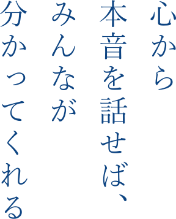
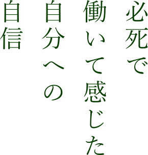
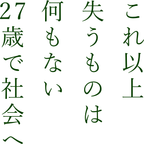
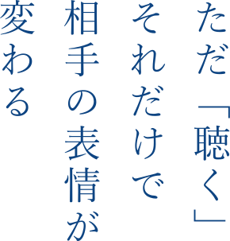
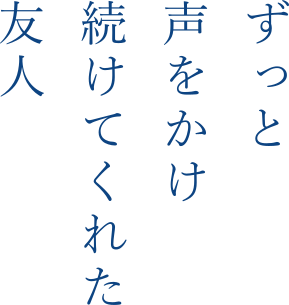
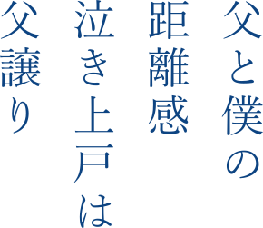
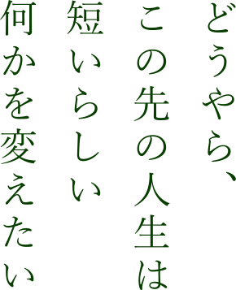

Story #01
柴田純治の物語
優等生からニートへ
Story #01-1

小さい頃の記憶はあまりないのですが、印象的だったのは小学校5、6年。教育熱心な先生の元、全員が学級委員になりたい！と立候補するようなクラスでした。そんなクラスで班のリーダーや学級委員をしたり、運動会では応援団をしたり、と、元々は緊張しいな僕でしたが、徐々に人前に出たり、前に立って何かやることが苦では無くなっていったように思います。
人前でうまいこと話すことは得意ではなかったのですが、自分の意見がある時には、相手が大人であっても伝えないと気が済まない部分もありました。取り繕ったら駄目で「堂々と心から本音を話せば、みんなが分かってくれるんだ」と知っていたのかもしれません。それは、今でも自分のベースになっているように思います。
妹が不登校になった時も、手がかからない兄であったし、中学生の頃は生徒会副会長。学校の成績も良く、自分が行きたいと思う学校に進学。学校の先生から「敵を作らない」とフィードバックされたこともありました。今思い返してみても、とても優等生だったように思います。

大学には一浪後、京都大学へ入学。
ただ、大学に入ってからの僕はとてもダラダラとした毎日を過ごすことになります。初めてのひとり暮らしで、好きな時に起きて、好きな時に学校に行く、という風に自由気ままな生活を送っていました。
でも、実は苦しかった。
長崎という田舎から出てきた自分、まわりは関西弁で京都出身者が多い中どうしても大学生活に溶け込めない。入学した学科も偏差値で選んだため、元々好きだった物理とは違う方向に来てしまった。その上、大学の授業のレベルは高く、ついていくのもやっと。結局、単位も取れず、大学にも通わず、かといって家の外に出るのも怖く、ニートを続けていました。あの頃は、成績が出る（留年が確定する）9月や3月を迎える頃、いつも鬱々していました。
僕が留年を繰り返す中、仲が良かった同郷の友達は卒業し、次のステージに進んでいきます。誰とも会わなくなり、社会から孤立していき、自分の居場所をオンライン上のゲームに見出すようになりました。1日の活動時間が、当時のテレホーダイ（定額でインターネットができるサービス）に合わせた23時～8時になり、昼夜が逆転する引きこもり生活を送るようになりました。
この頃、社会に何の価値も提供していない自分は「大学を辞めたらどうやって死のうか」ということばかり、いつも考えていました。
外の世界へ
Story #01-2

ある日、アルバイトをしないと食うに困ると感じ、高校からの友人に声をかけました。「株式会社ゆめみ」との出会いです。会社としては創業期。プログラミングの経験はありませんでしたが、必死で働いてみました。仕事は楽しかったし、将来エンジニアとして食べていけるんじゃないか、という自分への自信にも繋がりました。
でも、ある時「辞めたい！」という衝動に駆られました。
何か嫌なことがあったというような明確な理由があったわけでもありません。ただ、長時間働く毎日、納品前のピリピリする空間、なんとなく自分自身が消費されている感じをうっすら感じていました。本当にこの道で良いのかという疑問もあったと思いますが、当時の僕は誰にも相談できず、何も連絡もせず、いきなり会社に通うのを止めることしかできませんでした。

そこから、再び引きこもり生活がしばらく続き、最終的に大学に籍を置けなくなるリミット（8回生）が近づいてきました。それまで親には騙し騙し連絡をしていたのですが「大学をやめる」と告げた時、母から返ってきた「わたしの育て方が間違っていたかしら」という言葉はいまでも忘れられません。
大学を中退する自分はこれからどうしよう、と考えた時、最初に浮かんだのはアルバイトをした「株式会社ゆめみ」でした。「連絡もせず、すみませんでした。」と頭をさげて帰ってきた僕を「数年ぶりだね」と受け入れてくれたことはとても感謝しています。
正直、これ以上失うものはない。
27歳にして初めて社会に出ていくことになります。
コーチングとの出会い
Story #01-3

「ゆめみ」入社後は、本当にがむしゃらに働いてたように思います。いかに自分の給料を上げていくか、いかに誰よりも上に上がるか、に執着していました。使えないと思った人は切り、出来る人と組む、どんどん出世していこう。社会へ出るのが遅かったんだ、色んな人を踏み台にしてでも、巻き返さなきゃ。そんな気持ちだったと思います。
だからこそ、自分の Will を出してくれる人や自分の力で結果が出せるメンバーと一緒に働きたいと思っていました。逆に言うと、自分で頑張らないで人に頼る人やお願いばかりしてくる人は嫌いでした。
チームマネジメントをする中で出会ったのがコーチングでした。
CTIのコーチング基礎コースを受けた時「聴く」という力に衝撃を感じました。ただ「聴く」だけ、なのに、相手の表情が変わる。コース終了後、チームメンバーと話す中で「聴いてもらえてる感じがする」そう言われた時、新しい扉が開いた気がしました。

これまでチームメンバーに対する期待ばかりを持っていた僕自身が、「相手がどう思っているのか」「相手がどうしたいのか」に好奇心が向いていることに気付き、そのことを楽しく感じるようになってきました。
後で気付くのですが、僕が友達から孤立していたニート期間も、ずっと僕にメッセージを投げかけてくれてた友人がいました。高校時代の弓道部の仲間で、彼は部長だったのですが、僕が社会復帰した頃「今まで何やってたんだよ！」と暖かく迎え入れてくれました。
彼がいたから、僕は社会から切り離されずにいれたのかもしれない。ただただそばにいるだけで救われることがある。そんな彼の在り方がコーチに通じるものがあるように感じました。
お酒と友人と父と僕
Story #01-4
友人と僕
僕はお酒が好きです。お酒の場を通じて、目の前のその人の「人となり」に触れられる場が好き、と言った方がいいかもしれません。
そんな僕に、お酒の楽しさを教えてくれた酒飲み友だちがいます。その友人と初めて沖縄に行った日、友人の沖縄に住んでいる友だちに連れられ、地元の人しか行かないような酒場に、僕の出身地である長崎のお酒を持ち込んで飲んだことがありました。「沖縄の歴史」「長崎と原爆」「生きるとは」など話が重なり、入店後1時間ほど経つ頃には、初めて会った友人とも涙しながら盃を交わしていました。
もちろんお酒がなくてもできることかもしれません。ただ、僕は美味しいお酒と美味しい食べ物をつまみながら、相手との繋がりを感じることが好きなんだと思います。
そういえば、弓道部の部長だった友人も今ではバーの店主として活躍してます。お酒の場が、何かしら誰かとの縁を作ってきたように感じています。


父と僕
父とは子どもの頃からあまり会話した記憶がありません。
もともとお互いに口数は少なかったし、父の「朝6時台には家を出て、夜10時には寝る」という生活サイクルとも合ってなかったので、接すること自体が少なかったように思います。そこから疎遠さを感じているわけでもなく、これが我々、父と僕の距離感なのかなと思っていました。
長崎を出た後も、その関係性は変わらずなのですが、正月に帰崎した際、お酒の席で感極まり泣く父の姿を見たことがありました。何を話していたかは聞けなかったのですが、どうやら泣き上戸は父譲りのようです。
身体からのサイン
Story #01-5

30代半ばを過ぎた頃、健康診断で身体の異常を診断されました。「高血圧、糖尿病です」と。さらに調べてみると動脈硬化も見つかりました。このままだと今後大変なことが起こるよと主治医の先生から言われました。
この頃の僕は、生活スタイル全体が崩れまくっていました。ほとんど外食で、それこそラーメンやピザなどばかり。家の中にはコンビニ弁当などのゴミ袋だらけ。（結果的にゴミ屋敷となり、結婚するまで解消しなかったのですが）そして、20代の頃から比べると体重は20kg近く増え、身体も全く動きません。
その診断結果を受けた時、何かのスイッチが入ったように思います。「どうやら自分は、この先の人生は短いらしい。何かを変えたい。」そう感じた時に思い出したが、コーチングの学びを前に進めることでした。
コーチングの学びを深める中で、印象的だったのはプロセスコーチングのトレーニングの場でした。「じゅんちゃんにとって、受け入れられないものは何？」と、問われたときに父の顔が浮かんだのです。父が老いていく姿を受け入れられない、ということに初めて気づきました。そこからは一気に涙が止まらなくなり、みんなの前で嗚咽するくらい泣き続けました。
そして、何か詰まっていたものが流れる感覚を覚えました。
当時、子会社の取締役に任命される機会がありました。どんなコミットメントができるのか、どんな自分でありたいのか、自分は世の中に何を残したいのか、ようやく自分自身のことに目を向けるようになった気がしました。
このプロセスコーチングの学びを終えた頃、自分自身の人生でどう舵を切るのか、「リーダーシップ」を見つめようと思うようになりました。